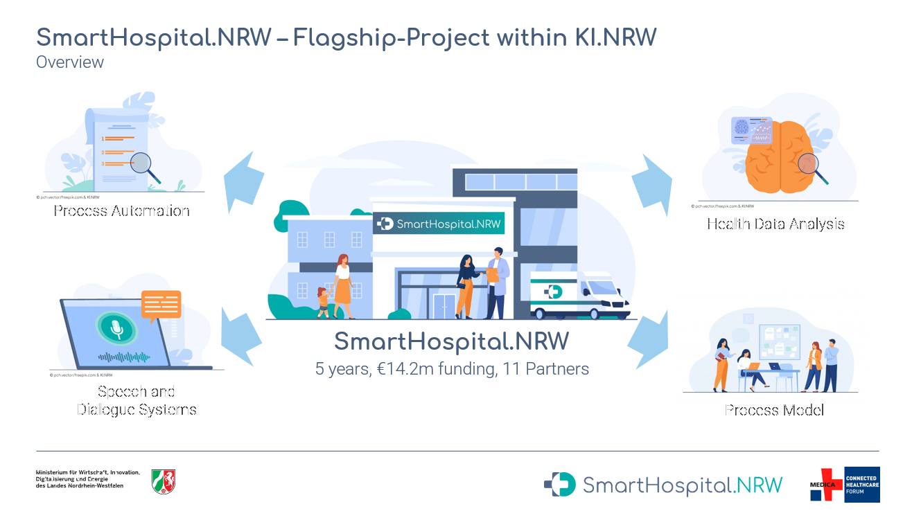
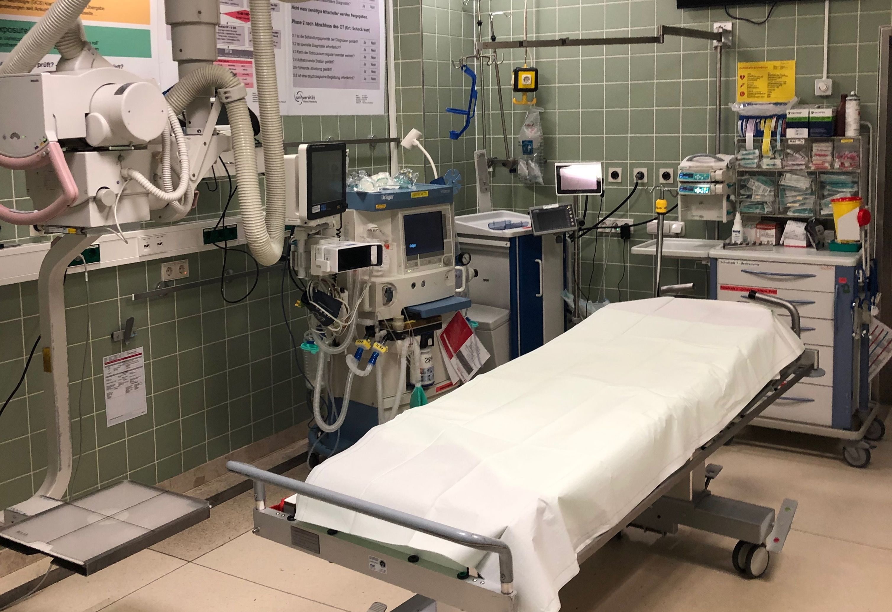
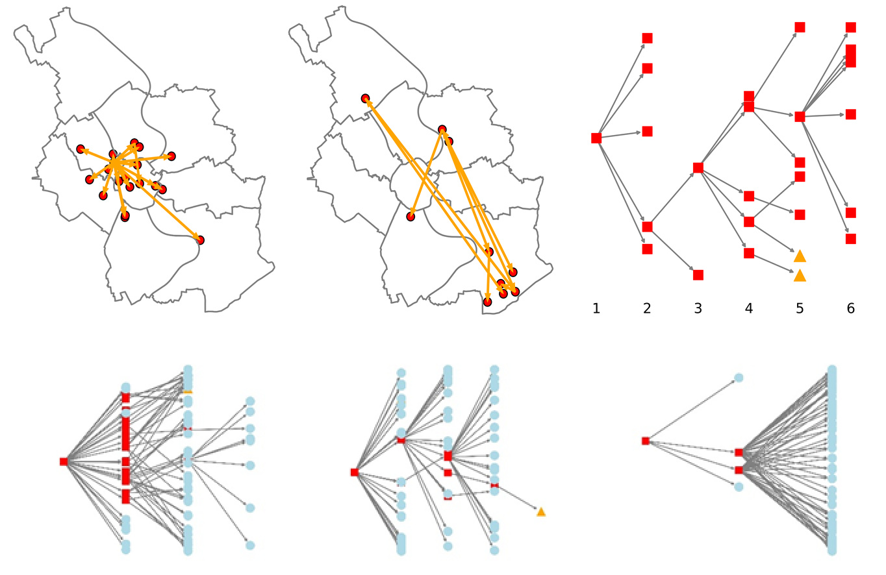
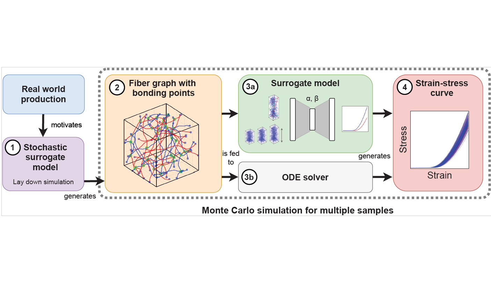
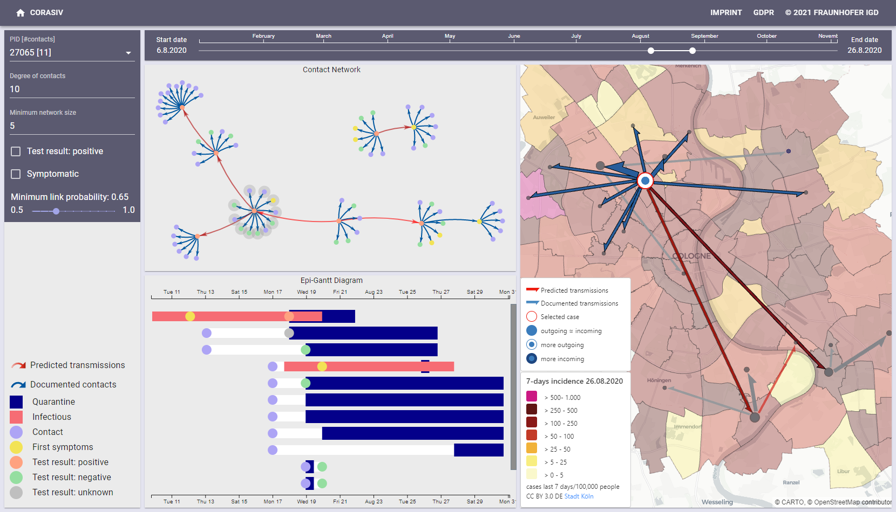
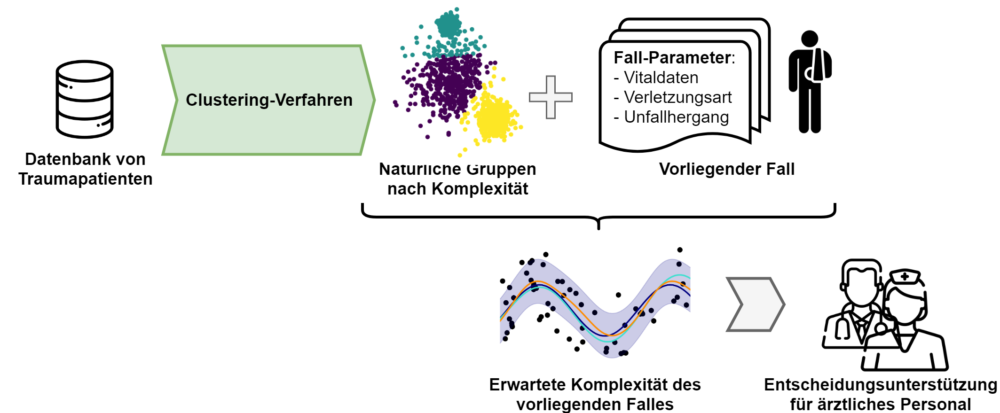

Dario Antweiler
Research Scientist
-
Research Scientist at Fraunhofer IAIS Research Institute, Sankt Augustin, Germany
Google Scholar
Reseach Gate
OrcID
Email: dario.antweiler [at] gmail [dot] com
I'm a Senior Data Scientist and Team Lead at Fraunhofer IAIS research institute in Sankt Augustin, Germany. As head of the Healthcare Analytics team, I focus on research and industry projects within the areas of Artificial Intelligence in Hospitals and Pharmacology. My main scientific area of interest includes Visual Analytics and Network Science.
Always looking for promising research & project collaborations! Just contact me, see above.
CV
-
2015 - B.Sc. Mathematics, University of Cologne
-
2018 - M.Sc. Mathematics, University of Cologne
-
2018 - present, Healthcare Analytics, Knowledge Discovery Group, Fraunhofer IAIS
Focusing on general topics on visualization and visual analytics and human-centered machine learning.
Projects
-

SmartHospital.NRW
This project aims to develop a process modell for German hospitals to become "Smart Hospitals". Together with partners from science, clinics and healthcare companies, we engineer multiple use cases for Artificial Intelligence (AI) in hospitals, including Natural Language Processing (NLP) for medical reports, speech recognition for patients and doctors as well as sensor data analysis.
-

LOTTE: Guidance system for optimized first aid treatment in trauma patients
How can AI help in the hospital domain? In this research project, funded by the German Ministery of Health (Bundesgesundheitsministerium, BMG), we identified potential AI use cases in the emergency care setting together with partner from law and healthcare economics.
-

CorASiV
Within this project we collaborate with Germany's largest public health office to analyze COVID-19 infection data in the city if Cologne. Central research targets are the spatio-temporal distribution of infections through contact networks.
-

Graph-Based Tensile Strength Approximation of Random Nonwoven Materials by Interpretable Regression
We present an efficient machine learning approach to predict material properties of nonwovens using a regression model trained on features extracted from the fiber graph, for which we develop a novel graph stretching algorithm.
-

Uncovering Chains of Infections through Spatio-Temporal and Visual Analysis of COVID-19 Contact Traces
A major challenge for departments of public health (DPHs) in dealing with the ongoing COVID-19 pandemic is tracing contacts in exponentially growing SARS-CoV2 infection clusters. We contribute a visual analytics framework to identify, assess and visualize clusters in COVID-19 contact tracing networks.
-

Die Nachvollziehbarkeit von KI-Anwendungen in der Medizin
We analyze multiple AI use cases in hospitals with regard to medico-legal and technical questions and present common opportunities and challenges.
Publications
- [2023] Dario Antweiler, Daniela Albiez, Dominik Bures, Bernadette Hosters, Florian Jovy-Klein, Kilian Nickel, Thomas Reibel, Johanna Schramm, Jil Sander, David Antons, Anke Diehl.
Aufgabenprofile und Qualifizierungsbedarfe für das Krankenhauspersonal im Hinblick auf den Einsatz von KI-basierten Anwendungen
Bundesgesundheitsblatt. submitted
- [2022] Dario Antweiler, Georg Fuchs.pdf
Visualizing Rule-based Classifiers for Clinical Risk Prognosis
IEEE VIS 2022. 10.1109/VIS54862.2022.00020
- [2022] Dario Antweiler, Marc Harmening, Nicole Marheineke, Andre Schmeißer, Raimund Wegener, Pascal Welke.pdf | github | code
Machine Learning Framework to predict Nonwoven Material Properties from Fiber Graph Representations
Software Impacts (Elsevier), 2022. 10.1016/j.simpa.2022.100423
- [2022] Dario Antweiler, David Sessler, Maxim Rossknecht, Benjamin Abb, Sebastian Ginzel, Jörn Kohlhammer.pdf | bibtex
Uncovering Chains of Infections through Spatio-Temporal and Visual Analysis of COVID-19 Contact Traces
Computer & Graphics (Elsevier), 2022. 10.1016/j.cag.2022.05.013
- [2022] Dario Antweiler, Marc Harmening, Nicole Marheineke, Andre Schmeißer, Raimund Wegener, Pascal Welke.pdf | bibtex
Graph-Based Tensile Strength Approximation of Random Nonwoven Materials by Interpretable Regression
Machine Learning with Applications (Elsevier), 2022. 10.1016/j.mlwa.2022.100288
- [2021] Dario Antweiler, David Sessler, Sebastian Ginzel, Jörn Kohlhammer.pdf | bibtex
Towards the Detection and Visual Analysis of COVID-19 Infection Clusters
EuroVA 2021 (at EuroVIS 2021), 10.2312/eurova.20211097
- [2021] Stefanie Hänold, Nelli Schlee, Dario Antweiler, Katharina Beckh.pdf | bibtex
Die Nachvollziehbarkeit von KI-Anwendungen in der Medizin - Eine Betrachtung aus juristischer Perspektive mit Beispielszenarien
Medizinrecht 2021 (Springer), MedR 39, 516–523 (2021), 10.1007/s00350-021-5901-3
- [2020] Dario Antweiler, Pascal Welkepdf
Temporal Graph Analysis for Outbreak Pattern Detection in COVID-19 Contact Tracing Networks
Machine Learning in Public Health Workshop, NeurIPS 2020.
Talks
- Towards the Detection and Visual Analysis of COVID-19 Infection Clusters
NeurIPS 2020, MLPH: Machine Learning in Public Health (Jun 14, 2021)
| Video |- Temporal Graph Analysis for Outbreak Pattern Detection in Covid-19 Contact Tracing Networks
NeurIPS 2020, MLPH: Machine Learning in Public Health (Dez 6, 2020)
| Video |Awards
- Honorable Mention Paper Award
Dario Antweiler, David Sessler, Sebastian Ginzel, Jörn Kohlhammer.
Towards the Detection and Visual Analysis of COVID-19 Infection Clusters
EuroVA 2021 (at EuroVIS 2021).Whitepaper
- Kilian Nickel, Katharina Milde, Dustin Kremer, Christine Malich, Dario Antweiler, Thomas Reibel, Florian Jovy-Klein, Jil Sander, Dominik Bures, Anke Diehl.
Bereit für das Smart Hospital? https://doi.org/10.24406/publica-553 - Dario Antweiler, Katharina Beckh, Jil Sander, Stefan Rüping.
Künstliche Intelligenz im Krankenhaus: Potenziale und Herausforderungen - Eine Fallstudie im Bereich der Notfallversorgung https://doi.org/10.24406/publica-fhg-300605
Blog Posts
Last Modified:© 2022, Dario Antweiler